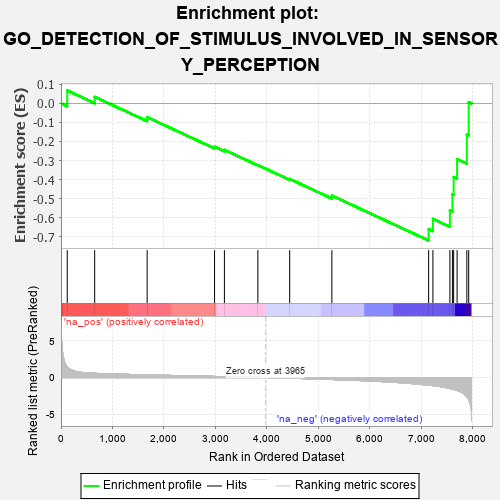
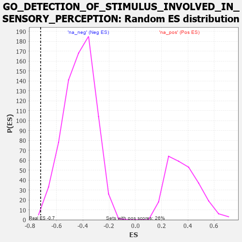

| | | Dataset | 7d |
| Phenotype | NoPhenotypeAvailable |
| Upregulated in class | na_neg |
| GeneSet | GO_DETECTION_OF_STIMULUS_INVOLVED_IN_SENSORY_PERCEPTION |
| Enrichment Score (ES) | -0.72075516 |
| Normalized Enrichment Score (NES) | -1.6924814 |
| Nominal p-value | 0.0026990552 |
| FDR q-value | 0.040646438 |
| FWER p-Value | 0.949 |
Table: GSEA Results Summary

Fig 1: Enrichment plot: GO_DETECTION_OF_STIMULUS_INVOLVED_IN_SENSORY_PERCEPTION
Profile of the Running ES Score & Positions of GeneSet Members on the Rank Ordered List
| PROBE | GENE SYMBOL | GENE_TITLE | RANK IN GENE LIST | RANK METRIC SCORE | RUNNING ES | CORE ENRICHMENT | | 1 | RTP3 | | | 121 | 1.425 | 0.0680 | No |
| 2 | EYS | | | 654 | 0.575 | 0.0347 | No |
| 3 | BACE1 | | | 1673 | 0.360 | -0.0722 | No |
| 4 | ANO1 | | | 2982 | 0.152 | -0.2277 | No |
| 5 | OR5B2 | | | 3173 | 0.126 | -0.2442 | No |
| 6 | WDR47 | | | 3823 | 0.023 | -0.3245 | No |
| 7 | REEP6 | | | 4441 | -0.084 | -0.3971 | No |
| 8 | SCN1A | | | 5260 | -0.261 | -0.4847 | No |
| 9 | WHRN | | | 7139 | -1.025 | -0.6609 | Yes |
| 10 | CNGB1 | | | 7222 | -1.096 | -0.6072 | Yes |
| 11 | GRIK2 | | | 7552 | -1.471 | -0.5626 | Yes |
| 12 | BEST1 | | | 7601 | -1.554 | -0.4779 | Yes |
| 13 | TRPA1 | | | 7625 | -1.608 | -0.3869 | Yes |
| 14 | CST1 | | | 7692 | -1.746 | -0.2932 | Yes |
| 15 | FYN | | | 7881 | -2.622 | -0.1637 | Yes |
| 16 | ASIC2 | | | 7917 | -2.995 | 0.0068 | Yes |
Table: GSEA details [plain text format]

Fig 2: GO_DETECTION_OF_STIMULUS_INVOLVED_IN_SENSORY_PERCEPTION: Random ES distribution
Gene set null distribution of ES for GO_DETECTION_OF_STIMULUS_INVOLVED_IN_SENSORY_PERCEPTION